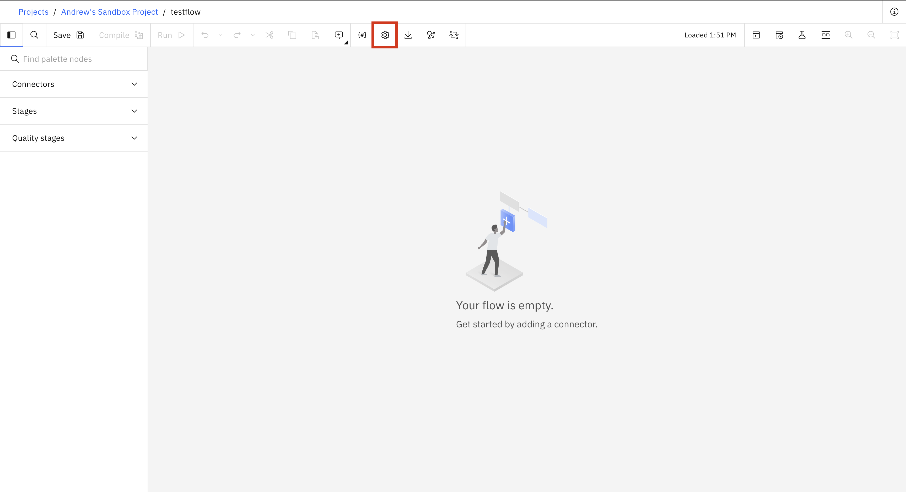
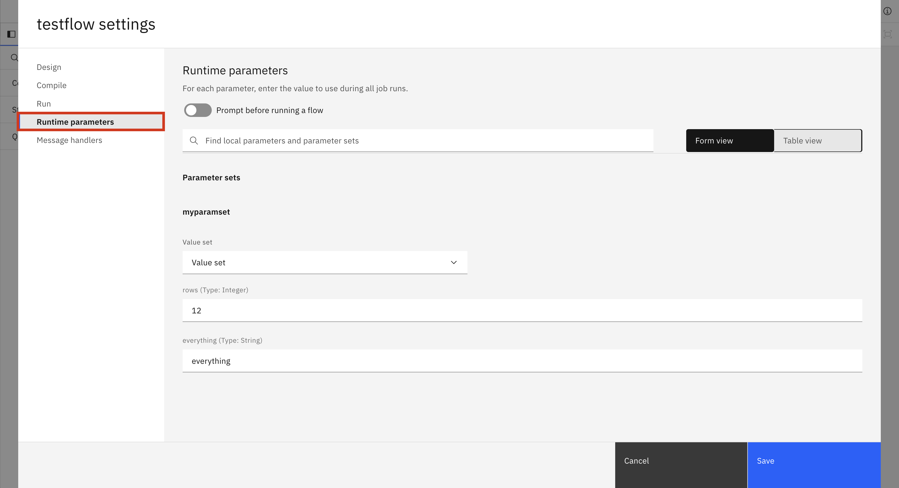

Flows#
A flow is an object used for storing the execution flow of a data pipeline. It is comprised of multiple stages with each stage defining how data is handled in that part of the execution flow.
- The SDK provides the following functionality to interact with batch flows:
Creating a flow
Retrieving flows
Editing a flow
Updating a flow
Duplicating a flow
Deleting a flow
Compiling a flow
Creating a Flow#
In the UI, you can create a flow by navigating to Assets -> New asset -> Transform and integrate data with DataStage.

In the SDK, you can create a flow from a Project object using the
Project.create_flow() method.
You are required to supply a name parameter and an optional description parameter.
You must also specify a flow_type as 'batch'.
This method returns a BatchFlow instance.
>>> new_flow = project.create_flow(name='My batch flow', description='optional description', environment=None, flow_type='batch')
>>> new_flow
BatchFlow(..., name='My batch flow', description='optional description', flow_id=...)
Retrieving Flows#
Flows can be retrieved through a Project object using the
Project.flows property.
You can also retrieve a single flow using the Project.flows.get() method.
which requires the flow_id parameter.
>>> project.flows # a list of all the flows
[StreamingFlow(name='example flow', ...), ...BatchFlow(..., name='example batch flow', ...)...]
>>> project.flows.get(name='My batch flow')
BatchFlow(..., name='My batch flow', description='optional description', ...)
Editing a Flow#
You can edit a flow in multiple ways.
For starters, you can edit a flow’s attributes like name or description.
>>> new_flow.description = 'new description for the flow'
>>> new_flow
StreamsetsFlow(name='My first flow', description='new description for the flow', ...)
Also you can edit any flow by editing its stages. This can include adding a stage, removing a stage, updating a stage’s configuration or connecting a stage in a different way than before. All the operations described are covered in the Stages documentation.
Updating a Flow#
In the UI, you can update a flow by making changes to the flow and hitting the ‘Save’ icon to update the flow.

In the SDK, you can make any changes to a Flow instance
in memory and update it by passing this object to Project.update_flow() method.
This method returns an HTTP response indicating the status of the update operation.
>>> new_flow.name = 'new flow name' # you can also update the stages, configuration, etc.
>>> project.update_flow(new_flow)
<Response [200]>
>>> new_flow
StreamsetsFlow(name='new flow name', description='new description for the flow', ...)
Duplicating a Flow#
To duplicate a flow using the SDK, you need to pass a Flow instance
to the Project.duplicate_flow() method
along with the name parameter for the name of the new flow and an optional description parameter.
This will duplicate a flow and return a new instance of Flow.
>>> duplicated_flow = project.duplicate_flow(new_flow, name='duplicated flow', description='duplicated flow description')
>>> duplicated_flow
StreamsetsFlow(name='duplicated flow', description='duplicated flow description', ...)
Deleting a Flow#
To delete a flow in the UI, you can go to Assets, choose a flow and click on the three dots next to it and choose Delete.

To delete a flow via the SDK, you need to pass a Flow instance to the Project.delete_flow() method.
This method returns an HTTP response indicating the status of the update operation.
>>> project.delete_flow(duplicated_flow)
<Response [204]>
Compiling a Flow#
In the UI, you can compile a batch flow by hitting the ‘Compile’ icon to compile the flow. Compiling is required before running a flow, so pressing the ‘Run’ icon in the UI will automatically compile first.

Because of this UI behavior, in the SDK, making a job out of a DataStage flow will automatically compile the flow for you.
However, if you wish to just compile a flow without creating or running a job for it, you can still call the BatchFlow.compile() method.
This will return an HTTP response indicating the status of the compile operation.
Setting Runtime Parameters of a Flow#
In the UI, you can set the runtime parameters of a flow by clicking the settings button and going to the runtime parameters tab. This tab will only show up if the flow has a local parameter or is using a parameter set. In this tab you can choose what value set you want to use for your parameter sets or change the values of specific parameters.
 {kind=link}
{kind=link}
In the SDK, there are a few different methods for changing runtime parameters.
BatchFlow.set_runtime_value_set() takes in the parameter_set_name and the value_set_name you want to use for that parameter set.
BatchFlow.set_runtime_parameter_value() takes in the parameter_set_name, the parameter_name, and the value you wish to set that parameter to.
BatchFlow.set_runtime_local_parameter() takes in the local_parameter_name and the value you wish to set it to.
>>> # batch_flow_with_parameters is a batch flow that uses a parameter set named myparamset and a local variable named localparam1
>>> batch_flow_with_parameters.set_runtime_value_set(parameter_set_name='myparamset', value_set_name='value_set_1')
>>> batch_flow_with_parameters.set_runtime_parameter_value(parameter_set_name='myparamset', parameter_name='param1', value='default')
>>> batch_flow_with_parameters.set_runtime_local_parameter(local_parameter_name='localparam1', value='random')
Warning
Changes to runtime parameters may not show up in the UI. If you are strictly using the SDK this will not be a problem.
Setting Runtime Settings of a Flow#
In the same settings window mentioned in the previous section there is another tab called Run. In this tab there are runtime settings that you can change for a flow. There is also an NLS and Format tab but these are not implemented in the SDK yet. These settings include the environment for the flow, the warning limit, and the max job retention. These settings (along with the runtime parameters) can also be changed per job, which is explained in this section: Editing Runtime Settings.

In the SDK, you can change the runtime settings of a flow by directly editing the configuration property of a BatchFlow. There are 4 different fields you can change.
environment: The internal name of the batch environment to use. To find the internal name of a batch environment you can either list out all internal names withlist_batch_environments()or callget_batch_environment()with the display name.warn_limit: The number of warnings before the stages are stopped. Takes anintgreater than 0 or None for no limit.retention_days: The number of days to keep a job run. Cannot be set ifretention_amountis also set. Takes anintgreater than 0 or None for no limit.retention_amount: The number of job runs to keep in total. Cannot be set ifretention_daysis also set. Takes anintgreater than 0 or None for no limit.
>>> batch_flow.configuration.environment='default_datastage_px'
>>> batch_flow.configuration.warn_limit=20
>>> batch_flow.configuration.retention_days=15
Warning
Changes to runtime settings may not show up in the UI. If you are strictly using the SDK this will not be a problem.